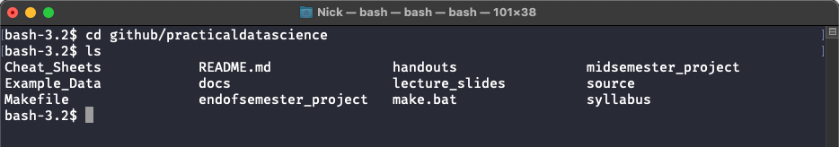
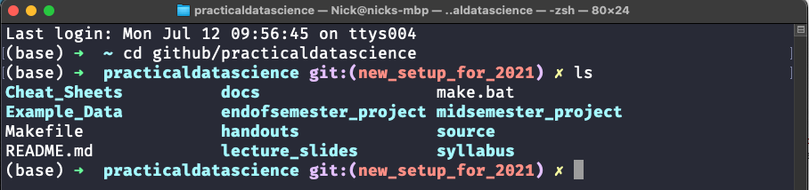

Improving Your Command Line Experience (macOS)#
In our next reading on Command Line Basics, we’ll learn that there are actually several programs available that allow users to interact with their operating system via text commands instead of using their mouse to click on icons (feel free to follow the link and read ahead if you’d like).
In this course, we’ll focus on learning to use a tool named sh (short for shell) and it’s near cousins (bash and zsh) which are pretty ubiquitous in the data science space. Why? Mostly because it is the default command line tool for Linux operating systems, and while you may not know it, most of the computers you interact with on a daily basis run Linux. Your personal computer may be a Mac (which is actually very similar to Linux at the operating system level), but the computers running websites, managing your email, running those ticket kiosk you see at the airport, etc. are almost all running on Linux. And when you start doing cloud computing, you’ll probably be working with a Linux virtual machine. So if you’re going to learn a command line tool as a data scientist, learning sh or one of its cousins is a natural choice.
As a Mac user, the default command line tool that comes with your operating system (which you can access by opening the Applications folder, opening the Utilities folder, then opening Terminal) is actually running bash, a close relative of sh. So you’re already basically setup to learn the tool you want to learn!
But while sh, bash, and zsh are all basically the same in terms of how they operate (they use all the same commands and have the same syntax), there are some differences in the bells-and-whistles they provide, and so in this reading we’ll discuss how you can install a version of zsh and a package of augmentations (called “Oh-My-Zsh!”) that has better syntax highlighting, tab completion, and customizations that will just make your life easier. Again, none of these changes will affect how the command line works in terms of the commands it accepts, it just makes it a lot friendlier.
To get this set up, we’ll be:
Install Oh-My-Zsh! (which installs a nicely configured version of
zsh)Transfer from of the system settings in your
bashinstall over tozsh.
Installing Oh-My-Zsh!#
Open your Terminal command line tool by going to
Applications>Utilitiesand openingTerminal.Go to the Oh-My-Zsh! site by going to https://ohmyz.sh/
Copy the command to install Oh-My-Zsh! from the Oh-My-Zsh! site. As of 2021, it was:
sh -c "$(curl -fsSL https://raw.github.com/ohmyzsh/ohmyzsh/master/tools/install.sh). (Note there’s a$at the start of the line on the website – that’s just to indicate your looking at the start of a command. Don’t copy the$into your Terminal session.)Now you should see instead of the name of your computer and a
$as your prompt, you’ll see an Oh-My-Zsh welcome message and a nice green arrow showing you where you can enter commands!
Why Did We Do That?#
I recognize that in having you set this up before we start our command line exercises, all the benefits of a zsh shell may not be entirely apparently, but here’s a simple comparison of what you see in the regular macOS terminal versus what you’ll see now that you have zsh installed.
If, in the normal macOS Terminal running bash I’d used cd to navigate to the folder where I keep the materials for this class, then asked for the contents of the folder by running ls, I’d see something like this (note the exact colors you see will depend on whether you have on dark mode / have changed themes):

Now that I have zsh installed, by contrast, I see this:

Not everything you see will make sense to you yet (though it all will by the end of the course!) but (base) is telling me about my current conda environment, practicaldatascience is the currently open folder, git tells me I’m in a git repository, and new_setup_for_2021 tells me about the git branch I’m on.
And when I ask for the contents of the current directory, folder names are displayed in bold, and files are displayed in white to make it easier to understand? These are the kinds of little tricks that may this a much easier tool to use!
Wanna Change Color Schemes?#
If you wanna play with the color scheme on your computer, you can go to the “Terminal” menu when Terminal is open and select Preferences. Then pick a theme and click the “Default” button to make it default. You can also download other themes (the one I’m using is called Dracula, and you can find it here) or customize any of the installed ones!
Configuring ZSh#
When you open a sh, bash, or zsh session, that session begins by running all the code in a special file the helps configure the session. Among the things done in these files, they often define “environment variables” – variables that are visible to any program run from your command line session, with information about things like where to find various programs, like Python.
When you installed miniconda, it actually added some code to your .bash_profile document to ensure that when you open a command line session, conda and Python can be correctly located. To ensure that your new command line can also find Python, we need to migrate those settings.
bash settings on a Mac live in a file located in your home directory (/users/[your user name]/) called .bash_profile. zsh settings are stored in a different file also located in your home directory called .zshrc. As we’ll discuss in a later lesson, files whose names start with a . are called “dot-files”, and aren’t normally displayed in macOS, but they are there. So to migrate our settings, we’ll do the following:
Navigate to your home directory. This can be done by typing
cd ~in your command line, as~is a known shortcut for your home directory.Open your
.bash_profilefile by typingcode .bash_profile. If you configured VS Code correctly, this will case the .bash_profile document to open in VS code.Leave that open and in the command line, type
code .zshrctop open the zsh configuration file.There you will find a block of text about 13 lines long that starts with
# >>> conda initialize >>>and ends with# <<< conda initialize <<<. Copy this block of text.In your
.zshrcfile, paste this code at the bottom. Note you’ll see a lot more stuff in your.zshrcthan in your.bash_profile–these are all tools for configuring Oh-My-Zsh! you can play with if you want!Now open a new command line session (because these files are only run when a command line session starts, they will only affect new sessions!) and type
conda -h. If you were successful, you’ll get a list of help documents forconda.
Note that if for whatever reason you’ve followed these setup directions out of order and installed Oh-My-Zsh! before you installed miniconda, miniconda will have actually put this code into .zshrc, so you won’t find it in .bash_profile.